🎨 Lesson 7.1: Statistical Graphics with Seaborn
Describe a chart in terms of your columns, and let seaborn do the grouping, the statistics and the legend, while Matplotlib stays in charge of the canvas.
🎯 Learning Objectives
By the end of this lesson, you will be able to:
- Draw relational, distribution and categorical charts from a tidy DataFrame with one seaborn call each
- Tell an axes-level function from a figure-level one, and choose the right one for a job
- Split a chart by
hue,colandrowinstead of writing loops - Say exactly what an error bar or shaded band represents, and set it with
errorbar= - Finish a seaborn chart with Matplotlib, and recognize when plain Matplotlib is the better tool
In This Lesson
🧭 What Seaborn Adds
In Module 3 you learned to draw with Matplotlib, and in Module 4 you learned what the numbers mean. Welcome to Module 7, where the two meet. This module covers four tools: seaborn for statistical charts, Plotly and Bokeh for charts a reader can explore, and Streamlit for turning an analysis into a small app.
Start with seaborn, because it is the smallest step from what you know. Seaborn is not a replacement for Matplotlib. It is a library built on Matplotlib: every seaborn chart is a Matplotlib figure, and everything from Module 3 still works on it.
💡 Mental Model: The Drafting Assistant
Matplotlib is a drawing table with excellent pens. You say "put a blue dot here, a line there, now a legend entry". Seaborn is an assistant who sits at the same table and takes orders at a higher level: "revenue against visitors, one color per store". The assistant splits the table into groups, picks the colors, computes any averages and confidence intervals, draws with the same pens, and writes the legend. When the assistant is done, you can still pick up a pen and add your own touches.
Load the libraries and the daily store sales. Seaborn is imported as sns by universal convention.
import matplotlib.pyplot as plt
import numpy as np
import pandas as pd
import seaborn as sns
pd.set_option("display.width", 150)
print(sns.__version__)
sales = pd.read_csv("data/daily_sales.csv", parse_dates=["date"])
sales["year"] = sales["date"].dt.year
sales["month"] = sales["date"].dt.month
sales["weekday"] = sales["date"].dt.day_name().str[:3]
print(sales[["date", "store", "visitors", "revenue", "month", "weekday"]].head())Output
0.13.2
date store visitors revenue month weekday
0 2024-01-01 Asheville 201 5017.07 1 Mon
1 2024-01-01 Bend 200 4132.92 1 Mon
2 2024-01-01 Boise 333 5962.00 1 Mon
3 2024-01-01 Flagstaff 144 3061.66 1 Mon
4 2024-01-02 Asheville 209 3605.81 1 TueThis table is in tidy (long) form: one row per observation (a store on a day) and one column per variable. That is the shape seaborn wants. If a chart is hard to describe to seaborn, the usual cause is a table that is not tidy yet, and the fix is in pandas (melt from Lesson 2.6), not in the plotting call.
One Chart, Two Ways
Here is "revenue against visitors, one color per store" in plain Matplotlib. You have to do the grouping yourself.
fig, ax = plt.subplots(figsize=(8, 4), layout="constrained")
for store, group in sales.groupby("store"):
ax.scatter(group["visitors"], group["revenue"], s=8, alpha=0.5, label=store)
ax.set_xlabel("visitors")
ax.set_ylabel("revenue")
ax.legend(title="store")
plt.show()And here it is in seaborn. You name the table, then say which column plays which role.
fig, ax = plt.subplots(figsize=(8, 4), layout="constrained")
sns.scatterplot(data=sales, x="visitors", y="revenue", hue="store", s=12, alpha=0.5, ax=ax)
plt.show()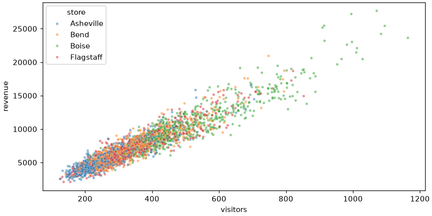
The roles are called semantic mappings. x and y are positions, hue is color, and many functions also accept size and style (marker or dash pattern). The pattern sns.something(data=table, x="col", y="col", hue="col") is the same across the whole library, so once it feels natural you already know most of seaborn.
🤔 Why This Matters
Exploration is a loop: look, wonder, slice the data another way, look again. If each new slice costs ten lines of plotting code, you will look at fewer slices and miss things. Seaborn makes "the same chart, split by store" a one-word change, which keeps your attention on the data.
🖌️ Themes with set_theme
The chart above used Matplotlib's default look, because importing seaborn changes nothing by itself. sns.set_theme() switches on seaborn's styling. It works by changing Matplotlib's global settings (rcParams, from Lesson 3.3), so it affects every figure you draw afterward, including ones made with plain Matplotlib.
sns.set_theme(style="whitegrid", palette="colorblind")
fig, ax = plt.subplots(figsize=(8, 4), layout="constrained")
sns.scatterplot(data=sales, x="visitors", y="revenue", hue="store", s=12, alpha=0.5, ax=ax)
plt.show()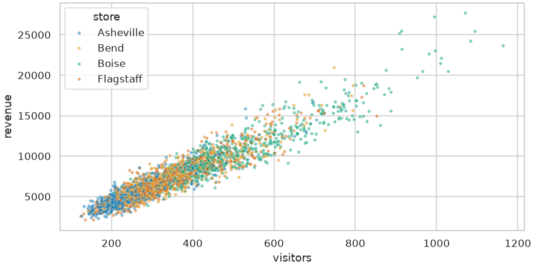
set_theme: a quiet grid and a colorblind-safe palette.| Argument | Choices | What it controls |
|---|---|---|
style | "darkgrid" (default), "whitegrid", "white", "ticks", "dark" | Background, grid lines, tick marks |
palette | "deep" (default), "colorblind", "muted", "Set2", and many more | The color cycle for categories |
context | "paper", "notebook" (default), "talk", "poster" | Sizes of fonts and lines, for the place the chart will be shown |
font_scale | a number such as 1.2 | Scales all text |
Call set_theme once, near the top of a notebook, and leave it. To go back to Matplotlib's defaults, run sns.reset_orig(). Every figure from here to the end of the lesson uses the theme set above.
✅ A Sensible Default
palette="colorblind" costs you nothing and makes your charts readable for the roughly one in twelve men who have some form of color vision deficiency. If a chart must also survive a black-and-white printer, add style="store" so the groups differ by marker shape as well as color.
🪜 Axes-Level and Figure-Level Functions
This is the one piece of seaborn's design that confuses people, and the confusion goes away once you see it. Seaborn's plotting functions come in two kinds.
- An axes-level function draws on one Matplotlib Axes. It accepts
ax=and returns that Axes.scatterplot,histplotandboxplotare axes-level. They slot into aplt.subplots()layout exactly likeax.plot()does. - A figure-level function creates a whole new figure and manages it for you. It can lay out a grid of panels with
col=androw=, and it returns a seabornFacetGrid, not an Axes. There are three main ones:relplot,displotandcatplot.
Each figure-level function is a front door to a family of axes-level functions, chosen with kind=.
fig, ax = plt.subplots(figsize=(6, 3.5), layout="constrained")
returned = sns.scatterplot(data=sales, x="visitors", y="revenue", ax=ax)
print(type(returned).__name__, returned is ax)
g = sns.relplot(data=sales, x="visitors", y="revenue", kind="scatter", height=3.5, aspect=1.6)
print(type(g).__name__)
print(type(g.figure).__name__, type(g.ax).__name__)Output
Axes True
FacetGrid
Figure AxesAxes-level (scatterplot, ...) | Figure-level (relplot, ...) | |
|---|---|---|
| Draws on | The Axes you pass with ax= (or the current one) | A new figure it creates |
| Returns | A Matplotlib Axes | A seaborn FacetGrid |
| Size set by | figsize= in plt.subplots() | height= and aspect= of each panel (width = height × aspect) |
| Panels by column | No: you loop over Axes yourself | Yes: col=, row=, col_wrap= |
| Legend | Inside the Axes | Outside the panels, on the right |
| Best for | One panel of a figure you are composing | Fast exploration with small multiples |
💡 A Rule That Rarely Fails
If you want to place the chart inside your own plt.subplots() grid, use the axes-level function. If you want seaborn to make the grid from a column of your data, use the figure-level one. Reaching inside a FacetGrid is always possible: g.figure is the Matplotlib Figure, g.axes is the array of Axes, and g.ax is the single Axes when there is only one panel.
📈 Relational Plots
Relational plots show how two numeric variables move together. You have met scatterplot. The other one, lineplot, has a behavior that surprises almost everyone the first time.
fig, ax = plt.subplots(figsize=(8, 4), layout="constrained")
sns.lineplot(data=sales, x="month", y="revenue", hue="store", ax=ax)
ax.set(xticks=range(1, 13), xlabel="month", ylabel="daily revenue ($)")
plt.show()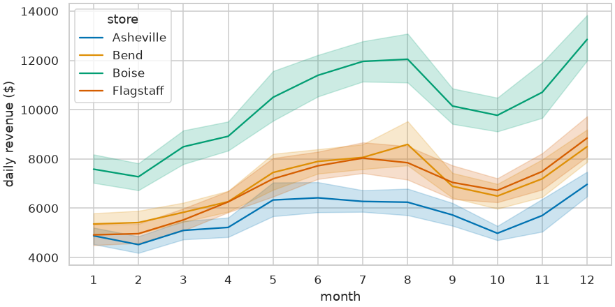
The table has about 60 rows for each store and month (two years of days), not one. A line needs a single y for each x, so lineplot aggregates: it draws the mean of revenue at each month, and shades a 95% confidence interval for that mean. You can check the line against pandas.
boise = sales[sales["store"] == "Boise"]
print(boise.groupby("month")["revenue"].agg(["count", "mean"]).round(0).head(4))Output
count mean
month
1 62 7585.0
2 57 7277.0
3 62 8494.0
4 60 8921.0This is seaborn's "statistician built in", and it is a feature as long as you know it is happening. Three arguments control it:
estimator="median"(or any function) changes what the line shows.estimator=Noneturns aggregation off and draws every row, which is rarely what you want.errorbar=Noneremoves the band. Other settings are covered in What the Error Bars Mean.units="year", estimator=Nonedraws one separate line per year inside each store, when the repeated measurements are distinct series.
⚠️ Aggregate Yourself When the Aggregation Is the Point
If your chart is "total revenue per month", compute the totals with groupby first and plot that table. Then each x has one y, seaborn has nothing to average, and no band appears. A band around a line you thought was raw data is the sign that seaborn found several rows per x.
📊 Distribution Plots
In Lesson 4.2 you found that order totals are strongly right-skewed: most orders are modest and a few are very large. histplot draws the histogram and has the fix for skew built in.
orders = pd.read_csv("data/orders.csv", parse_dates=["order_date"])
completed = orders[orders["status"] == "completed"]
fig, axes = plt.subplots(1, 2, figsize=(10, 3.6), layout="constrained")
sns.histplot(data=completed, x="order_total", bins=60, ax=axes[0])
axes[0].set_title("Linear scale")
sns.histplot(data=completed, x="order_total", bins=60, log_scale=True, ax=axes[1])
axes[1].set_title("log_scale=True")
plt.show()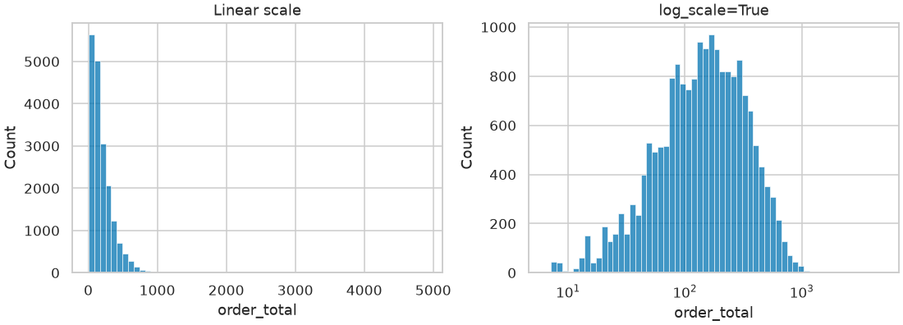
Add hue to compare groups. Online orders outnumber store orders by almost two to one, and groups of different size need two extra settings to be compared fairly.
fig, axes = plt.subplots(1, 2, figsize=(10, 3.6), layout="constrained")
sns.histplot(data=completed, x="order_total", hue="channel", log_scale=True, bins=50,
element="step", stat="density", common_norm=False, ax=axes[0])
sns.ecdfplot(data=completed, x="order_total", hue="channel", log_scale=True, ax=axes[1])
axes[1].axhline(0.5, color="gray", linewidth=1, linestyle="--")
plt.show()
print(completed.groupby("channel")["order_total"].median())Output
channel
online 153.950
store 133.465
Name: order_total, dtype: float64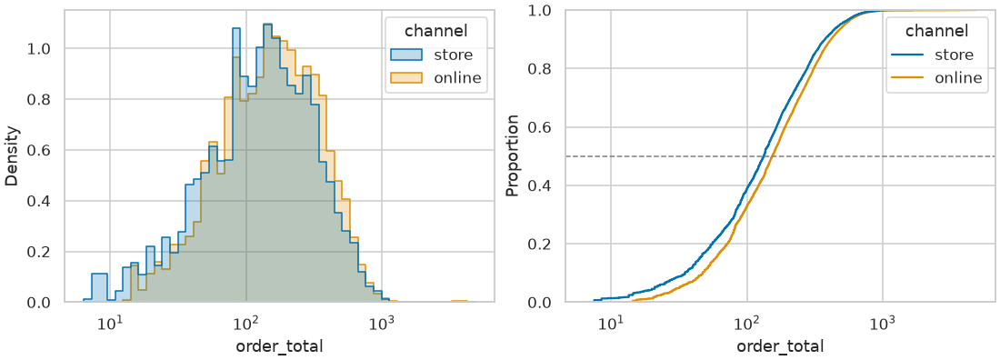
stat="density"withcommon_norm=Falsescales each group to area 1 separately, so you compare shapes, not sizes. Leavecommon_normat its defaultTrueand the smaller group is squashed.element="step"draws outlines, which overlap more readably than filled bars.ecdfplotdraws the empirical cumulative distribution: no bins to choose, and reading across at 0.5 gives each group's median. It is the cleanest way to compare several distributions on one Axes.
⚠️ kdeplot Smooths, and Smoothing Can Mislead
sns.kdeplot (and histplot(kde=True)) draws a smooth density curve. It looks polished, but it invents detail between your data points: it can show density below zero for a quantity that cannot be negative, and it can blur a real gap. Look at the histogram first. Use a KDE when you have checked that it tells the same story.
📦 Categorical Plots
Categorical plots put a category on one axis and a number on the other. They fall into three groups, from "show everything" to "show a summary".
| Shows | Functions | Use when |
|---|---|---|
| Every observation | stripplot, swarmplot | Groups are small (dozens to a few hundred points) |
| The distribution | boxplot, violinplot, boxenplot | You care about spread, skew and outliers |
| An estimate with its uncertainty | barplot, pointplot; countplot for counts | You are comparing a typical value across groups |
A box plot of revenue by day of the week shows the weekly rhythm of the stores. Categories appear in the order seaborn first meets them in the data, so pass order= whenever the order carries meaning.
days = ["Mon", "Tue", "Wed", "Thu", "Fri", "Sat", "Sun"]
fig, ax = plt.subplots(figsize=(8, 4), layout="constrained")
sns.boxplot(data=sales, x="weekday", y="revenue", order=days, ax=ax)
plt.show()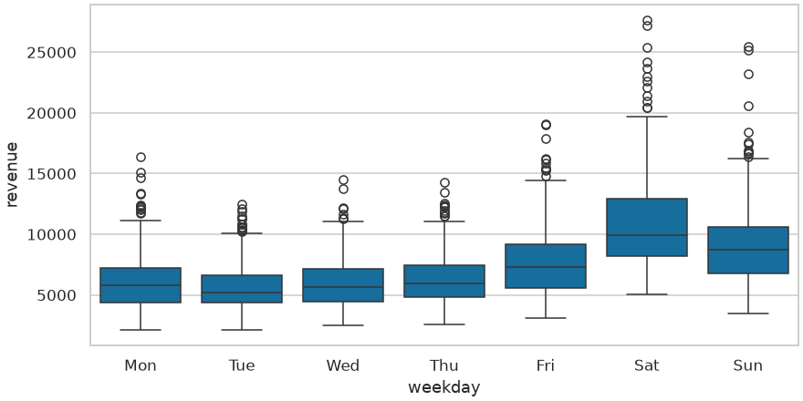
Add hue and each category splits into side-by-side boxes. Here promo_day (0 or 1) is the split.
fig, ax = plt.subplots(figsize=(8, 4), layout="constrained")
sns.boxplot(data=sales, x="store", y="revenue", hue="promo_day", ax=ax)
plt.show()
print(sales.groupby("promo_day")["revenue"].agg(["count", "mean"]).round(0))Output
count mean
promo_day
0 2801 7212.0
1 96 13950.0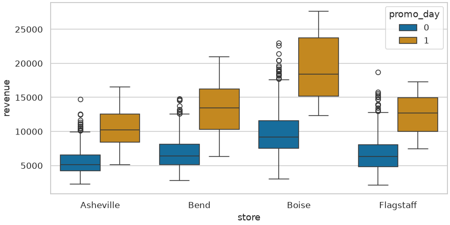
📏 What the Error Bars Mean
barplot, pointplot and lineplot all draw an estimate (the mean, unless you change estimator) with an error bar or band. An error bar is only useful if the reader knows what it stands for, and there are two completely different things it can stand for:
- Spread of the data: how much do individual observations vary? Standard deviation and percentile intervals answer this.
- Uncertainty of the estimate: how well do we know the mean? Standard error and confidence intervals answer this. They shrink as the sample grows; spread does not.
In Lesson 3.1 you drew error bars with ax.errorbar, which meant computing the center and the half-width of every bar yourself. Seaborn computes them from the raw rows, and its errorbar= argument chooses what to compute. (It replaced an older argument named ci=, which you will still see in old tutorials.)
errorbar= | Bar spans | Kind |
|---|---|---|
("ci", 95) (the default) | 95% confidence interval for the estimate, by bootstrapping | Uncertainty |
"se" or ("se", 2) | Estimate ± 1 (or 2) standard errors | Uncertainty |
"sd" or ("sd", 2) | Mean ± 1 (or 2) standard deviations | Spread |
("pi", 50) | Percentile interval: the middle 50% of the data | Spread |
None | No bar |
The survey asked customers to rate store staff from 1 to 5. Here is the mean rating by store, drawn four times from the same data.
survey = pd.read_csv("data/survey.csv")
stores = ["Boise", "Bend", "Flagstaff", "Asheville"]
in_store = survey[survey["store"].isin(stores)]
choices = [("ci", 95), "se", "sd", ("pi", 50)]
fig, axes = plt.subplots(1, 4, figsize=(10, 3.4), sharey=True, layout="constrained")
for ax, choice in zip(axes, choices):
sns.pointplot(data=in_store, x="store", y="sat_staff", order=stores,
errorbar=choice, seed=42, linestyle="none", capsize=0.2, ax=ax)
ax.set_title(f"errorbar={choice!r}", fontsize=10)
ax.set_xlabel("")
ax.tick_params(axis="x", rotation=45)
plt.show()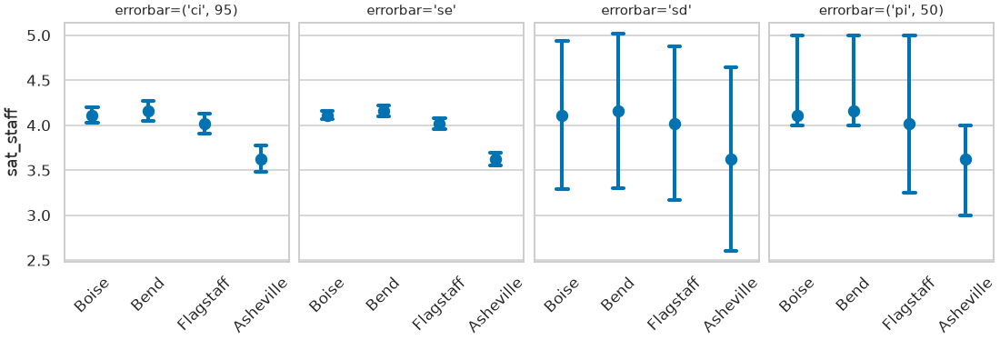
The numbers behind the first three panels, computed by hand:
summary = in_store.groupby("store")["sat_staff"].agg(n="count", mean="mean", sd="std", se="sem")
summary["ci_low"] = summary["mean"] - 1.96 * summary["se"]
summary["ci_high"] = summary["mean"] + 1.96 * summary["se"]
print(summary.loc[stores].round(2))Output
n mean sd se ci_low ci_high
store
Boise 320 4.11 0.82 0.05 4.02 4.20
Bend 228 4.16 0.86 0.06 4.05 4.27
Flagstaff 206 4.02 0.86 0.06 3.90 4.14
Asheville 193 3.62 1.02 0.07 3.48 3.77Asheville's mean is 3.62, and its interval ends well below where every other store's begins. Individual ratings, though, vary by about a full point everywhere, so plenty of Asheville customers are happy and plenty of Boise customers are not. Both statements are true. Which error bar you draw decides which one the reader hears, so always say in the caption or axis label what the bars are.
💡 Three Practical Notes
Bootstrapping is random. Bootstrapping means resampling your own rows with replacement many times and seeing how much the estimate moves: the idea from Lesson 1.4, named in the Lesson 4.3 bonus challenge. The default confidence interval comes from resampling your data 1,000 times, so the bar ends wiggle slightly from run to run. Pass seed=42 (any integer) to make a figure reproducible, as above.
Overlapping intervals are not a test. Clearly separated 95% intervals do indicate a real difference, but intervals that overlap a little can still belong to significantly different groups. When the decision matters, run the test from Lesson 4.5.
Ratings are ordinal. A mean of a 1-to-5 rating treats the steps as equal. It is a common and useful summary, but for a careful comparison prefer the rank-based methods from Module 4, and consider showing the share of each rating instead.
🔲 Small Multiples: col and row
With four stores on one scatter plot, the points pile on top of each other. The cure is small multiples: the same chart repeated once per group, with shared axes so the panels can be compared at a glance. In Lesson 3.2 that took a loop over axs.flat. A figure-level function does it with col=.
g = sns.relplot(data=sales, x="visitors", y="revenue", col="store", col_wrap=2,
hue="promo_day", s=12, alpha=0.6, height=2.8, aspect=1.5)
g.set_axis_labels("visitors per day", "revenue ($)")
g.set_titles("{col_name}")
g.figure.subplots_adjust(top=0.88)
g.figure.suptitle("Revenue rises with foot traffic in every store")
plt.show()
print(g.axes.shape, g.figure.get_size_inches().round(1))Output
(4,) [9.5 5.6]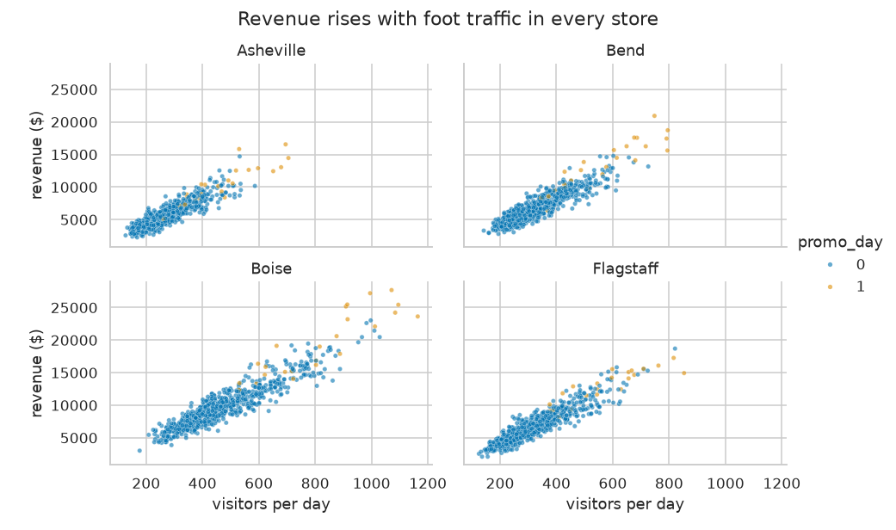
Reading the call: col="store" makes one panel per store, col_wrap=2 starts a new row after two panels, and height=2.8, aspect=1.5 makes each panel 2.8 inches tall and 4.2 wide. A FacetGrid has its own methods for the things that apply to every panel: set_axis_labels, set_titles (with the placeholders {col_name} and {row_name}) and set. For anything else, use g.figure and g.axes.
row= works the same way for a second variable, and all three figure-level functions accept both. Here catplot shows the weekly rhythm for each store.
g = sns.catplot(data=sales, x="weekday", y="revenue", col="store", col_wrap=2, order=days,
kind="bar", errorbar=("ci", 95), seed=42, height=2.4, aspect=1.7)
g.set_axis_labels("", "mean daily revenue ($)")
g.set_titles("{col_name}")
plt.show()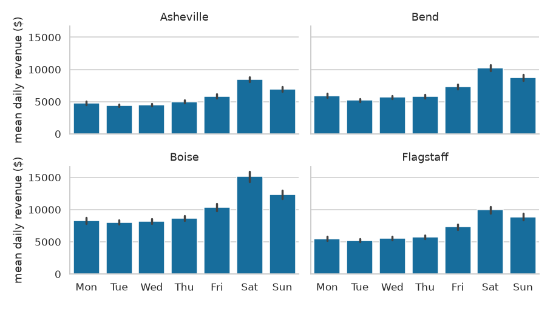
⚠️ Facets Multiply Quickly
col with 4 values and row with 9 values is 36 panels, each too small to read. Facet by variables with a handful of values. If a variable has many levels, filter to the few you care about or use hue.
🌡️ Heatmaps and Pair Plots
Heatmap: A Table You Can See
sns.heatmap is the exception to the tidy-data rule. It takes a wide table (a matrix) and colors each cell by its value. A pivot table from Lesson 2.6 is exactly the right input. In Lesson 3.3 you built a heatmap from ax.imshow and added the colorbar and tick labels by hand, and in Lesson 4.4 you wrote the numbers into the cells with two loops. sns.heatmap reads the row and column labels from the DataFrame and does all of that in one call.
grid = sales.pivot_table(index="weekday", columns="month", values="revenue", aggfunc="mean").loc[days]
print(grid.round(0).iloc[:, :6])
fig, ax = plt.subplots(figsize=(9, 3.6), layout="constrained")
sns.heatmap(grid / 1000, annot=True, fmt=".1f", cmap="YlGnBu", linewidths=0.5,
cbar_kws={"label": "mean daily revenue ($ thousands)"}, ax=ax)
ax.set(xlabel="month", ylabel="")
plt.show()Output
month 1 2 3 4 5 6
weekday
Mon 4457.0 4437.0 4764.0 5691.0 6733.0 6903.0
Tue 4432.0 4467.0 5008.0 5316.0 5728.0 6321.0
Wed 5015.0 4599.0 5030.0 5434.0 5660.0 6955.0
Thu 5101.0 4765.0 5627.0 6098.0 6262.0 6838.0
Fri 5801.0 5760.0 5989.0 7164.0 8558.0 8403.0
Sat 8535.0 8024.0 8950.0 9396.0 12098.0 12444.0
Sun 6986.0 6925.0 7513.0 8179.0 9986.0 9932.0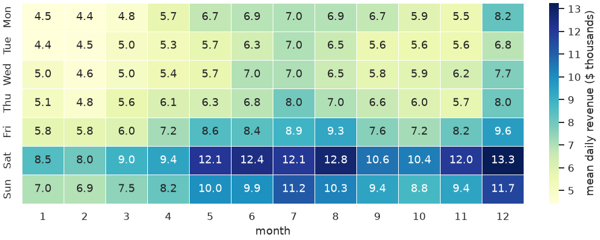
The second classic use is a correlation matrix. For a quantity that runs from −1 to +1 use a diverging colormap centered on zero, and fix vmin and vmax so the colors mean the same thing in every chart you make.
cols = ["visitors", "transactions", "units", "revenue", "staff_on_duty", "promo_day"]
corr = sales[cols].corr()
fig, ax = plt.subplots(figsize=(6.5, 5), layout="constrained")
sns.heatmap(corr, annot=True, fmt=".2f", cmap="vlag", vmin=-1, vmax=1, center=0, square=True, ax=ax)
plt.show()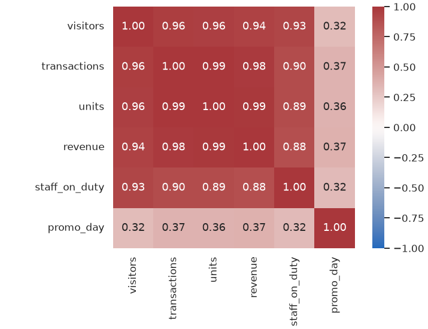
Pair Plot: Use Sparingly
sns.pairplot draws every numeric column against every other, with distributions on the diagonal. It is a quick first look at a few variables. The cost grows with the square of the number of columns, so choose them with vars=, and sample the rows if there are many.
sample = sales.sample(600, random_state=42)
g = sns.pairplot(sample, vars=["visitors", "transactions", "revenue", "staff_on_duty"],
hue="store", corner=True, height=1.9, plot_kws={"s": 10, "alpha": 0.6})
plt.show()
print(g.axes.shape)Output
(4, 4)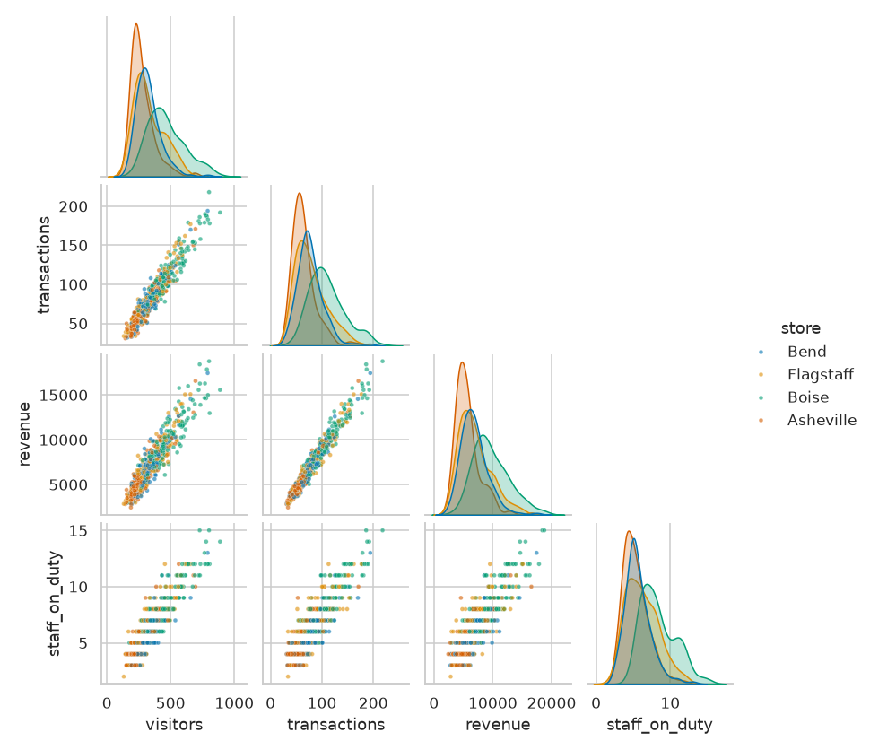
corner=True drops the mirror-image upper half. Four variables are readable. Ten would give 55 tiny panels and a long wait.⚠️ A Pair Plot Is a Starting Point
It is tempting to call sns.pairplot(df) on a whole table and paste the result into a report. Resist. Nobody can read a 12 by 12 grid, id columns produce meaningless panels, and the chart has no message. Use it privately to decide which two or three relationships deserve a proper chart of their own.
🔧 Finishing with Matplotlib
Seaborn gets you most of a chart in one line. The last part (a title that states the finding, dollar formatting, an annotation, a legend moved out of the way) is Matplotlib work, done on the Axes that seaborn returned.
from matplotlib.ticker import StrMethodFormatter
fig, ax = plt.subplots(figsize=(8, 4), layout="constrained")
sns.barplot(data=sales, x="weekday", y="revenue", hue="year", order=days,
errorbar=("ci", 95), seed=42, ax=ax)
ax.set_title("Saturday is the biggest day of the week, in both years", loc="left")
ax.set(xlabel="", ylabel="mean daily revenue per store")
ax.yaxis.set_major_formatter(StrMethodFormatter("${x:,.0f}"))
sns.move_legend(ax, "upper left", title="Year")
sns.despine(left=True)
plt.show()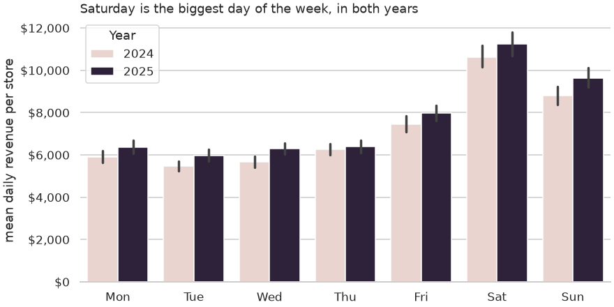
sns.move_legend and sns.despine are two small seaborn helpers for the same finishing job.When Plain Matplotlib Is the Better Tool
Seaborn is a specialist. Reach past it when its help is not what you need.
| Situation | Why Matplotlib wins |
|---|---|
| You already aggregated the data (twelve monthly totals, five category shares) | There is nothing left for seaborn to compute. ax.bar or ax.plot is as short and has no surprises. |
| A custom layout: panels of different sizes, an inset, twin axes | Figure-level functions own their figure. Build the layout with plt.subplots or subplot_mosaic and place axes-level calls in it, or skip seaborn. |
| Heavy annotation: arrows, shaded date ranges, reference lines with labels | These are drawing tasks, not statistical ones. |
| A chart type seaborn does not have: stacked areas, waterfall, pie, maps | Seaborn's menu is deliberately short. |
| Hundreds of thousands of points | Seaborn's grouping and bootstrapping add overhead. Aggregate first, or draw with ax.plot or ax.hexbin. |
| A figure for publication where every element must be exact | You will end up setting each property by hand anyway. |
✅ It Is Not Either-Or
The most common professional pattern is the one above: seaborn for the statistical drawing, Matplotlib for the layout and the finish. You are not choosing a side. You are choosing who does which part.
⚠️ Common Mistakes
Every one of these happens to everybody. Each message is useful once you know how to read it.
1. A Column Name That Is Not in the Table
fig, ax = plt.subplots()
sns.barplot(data=sales, x="store", y="revenu", ax=ax)Error
ValueError: Could not interpret value `revenu` for `y`. An entry with this name does not appear in `data`.What it means: seaborn looked for a column called revenu and did not find one. Fix: check spelling and capitalization against sales.columns. The same message appears when you forget data=, or when the column you want is in the index: call .reset_index() first.
2. Passing ax= to a Figure-Level Function
This one is a warning, not an error, so in a notebook it appears in a colored box above the chart. The code below catches the warning so that you can read its text.
import warnings
fig, ax = plt.subplots(figsize=(6, 3))
with warnings.catch_warnings(record=True) as caught:
warnings.simplefilter("always")
sns.relplot(data=sales, x="visitors", y="revenue", ax=ax)
print(caught[0].category.__name__ + ":", caught[0].message)Output
UserWarning: relplot is a figure-level function and does not accept the `ax` parameter. You may wish to try scatterplotWhat it means: relplot ignored your Axes and made its own figure, so you get two: your empty one and the one seaborn made. Fix: do what the message suggests. Inside your own layout use the axes-level function (scatterplot); use relplot only when seaborn should own the figure.
3. The Old ci= Argument
fig, ax = plt.subplots(figsize=(6, 3))
with warnings.catch_warnings(record=True) as caught:
warnings.simplefilter("always")
sns.barplot(data=sales, x="store", y="revenue", ci="sd", ax=ax)
print(caught[0].category.__name__ + ":", str(caught[0].message).strip())Output
FutureWarning: The `ci` parameter is deprecated. Use `errorbar='sd'` for the same effect.What it means: the code came from an older tutorial. It still runs, with a warning, but the argument is on its way out. Fix: errorbar="sd", errorbar=("ci", 95) or errorbar=None.
4. Categories in a Meaningless Order
ages = ["18-24", "25-34", "35-44", "45-54", "55-64", "65+"]
fig, axes = plt.subplots(1, 2, figsize=(10, 3), layout="constrained")
sns.countplot(data=survey, x="age_group", ax=axes[0])
print([label.get_text() for label in axes[0].get_xticklabels()])
sns.countplot(data=survey, x="age_group", order=ages, ax=axes[1])
print([label.get_text() for label in axes[1].get_xticklabels()])Output
['65+', '18-24', '25-34', '45-54', '35-44', '55-64']
['18-24', '25-34', '35-44', '45-54', '55-64', '65+']What it means: there is no error at all, which is why this one slips into reports. Text categories are drawn in the order they first appear in the table. Fix: pass order= (and hue_order=, col_order=). If the column has a natural order that you will reuse, convert it once to an ordered categorical (pd.CategoricalDtype, Lesson 2.9) and every seaborn call will respect it.
5. Treating a FacetGrid Like an Axes
g = sns.catplot(data=sales, x="store", y="revenue", kind="box", height=3, aspect=1.6)
g.set_title("Revenue by store")Error
AttributeError: 'FacetGrid' object has no attribute 'set_title'What it means: catplot returned a FacetGrid, and set_title is an Axes method. Fix: g.set_titles("...") for the panel titles, g.figure.suptitle("...") for one title over the grid, or g.ax.set_title("...") when there is a single panel. When any seaborn object lacks a method you expected, print type(obj): it tells you which of the two kinds you are holding.
🛠️ Project: The Store Performance Brief
Pinecrest's regional manager wants one page she can read in a minute before the quarterly review: how is each store trending, when are stores busy, and what does rain do to foot traffic? You will build a four-panel figure. Each panel is written as a small function that takes an ax, the draw-on-an-Axes pattern from Lesson 3.2, which is the cleanest way to combine axes-level seaborn with your own layout. If you kept the helpers you wrote in Lesson 3.3 (add_titles, clean_up, thousands), they work on these Axes unchanged. Allow about 35 minutes.
🛠️ Step 1: Prepare the tables (7 min)
Start from a fresh load so the project runs by itself. Build a monthly table for the trend (one row per store and month, so lineplot has nothing to average), and merge in the weather to flag rainy days. The two files name the store column differently, so the merge needs left_on and right_on.
sales = pd.read_csv("data/daily_sales.csv", parse_dates=["date"])
weather = pd.read_csv("data/store_weather.csv", parse_dates=["date"])
sales["year"] = sales["date"].dt.year
sales["month"] = sales["date"].dt.month
sales["weekday"] = sales["date"].dt.day_name().str[:3]
sales["month_start"] = sales["date"].dt.to_period("M").dt.to_timestamp()
monthly = sales.groupby(["store", "month_start"], as_index=False)["revenue"].sum()
daily = sales.merge(weather, left_on=["date", "store"], right_on=["date", "city"], how="left")
daily["weather"] = np.where(daily["precip_in"] >= 0.10, "rainy", "dry")
print(monthly.shape, daily.shape)
print(daily["weather"].value_counts())Output
(96, 3) (2903, 17)
weather
dry 2514
rainy 389
Name: count, dtype: int64🛠️ Step 2: Panel A, the trend (7 min)
Write the function, then test it alone on a throwaway figure. Print the year-over-year change so that the title you write later is backed by a number.
store_order = ["Boise", "Bend", "Flagstaff", "Asheville"]
def panel_trend(ax):
sns.lineplot(data=monthly, x="month_start", y="revenue", hue="store", hue_order=store_order, ax=ax)
ax.set_title("A. Monthly revenue", loc="left")
ax.set(xlabel="", ylabel="revenue ($)")
ax.yaxis.set_major_formatter(StrMethodFormatter("{x:,.0f}"))
ax.tick_params(axis="x", rotation=30)
sns.move_legend(ax, "upper left", ncols=2, title=None, fontsize=8)
fig, ax = plt.subplots(figsize=(6, 3.2), layout="constrained")
panel_trend(ax)
plt.show()
by_year = sales.pivot_table(index="store", columns="year", values="revenue", aggfunc="sum")
by_year["change_pct"] = (by_year[2025] / by_year[2024] - 1) * 100
print(by_year.round(1))Output
year 2024 2025 change_pct
store
Asheville 2123278.2 2017699.3 -5.0
Bend 2476117.9 2569349.5 3.8
Boise 3518292.3 3846405.9 9.3
Flagstaff 2270179.6 2717997.3 19.7🛠️ Step 3: Panels B and C, weekday and weather (8 min)
Both are bar charts of a mean with a 95% confidence interval. Seed the bootstrap so the figure is identical every time you run it.
def panel_weekday(ax):
sns.barplot(data=sales, x="weekday", y="revenue", order=days, color="#667eea",
errorbar=("ci", 95), seed=42, ax=ax)
ax.set_title("B. Mean daily revenue by weekday", loc="left")
ax.set(xlabel="", ylabel="revenue ($)")
ax.yaxis.set_major_formatter(StrMethodFormatter("{x:,.0f}"))
def panel_weather(ax):
sns.barplot(data=daily, x="store", y="visitors", hue="weather", order=store_order,
hue_order=["dry", "rainy"], errorbar=("ci", 95), seed=42, ax=ax)
ax.set_title("C. Visitors on dry and rainy days", loc="left")
ax.set(xlabel="", ylabel="visitors per day")
sns.move_legend(ax, "upper right", title=None, fontsize=8)
fig, axes = plt.subplots(1, 2, figsize=(10, 3.2), layout="constrained")
panel_weekday(axes[0])
panel_weather(axes[1])
plt.show()
rain = daily.pivot_table(index="store", columns="weather", values="visitors", aggfunc="mean")
rain["change_pct"] = (rain["rainy"] / rain["dry"] - 1) * 100
print(rain.loc[store_order].round(1))Output
weather dry rainy change_pct
store
Boise 497.4 366.7 -26.3
Bend 339.5 272.7 -19.7
Flagstaff 338.3 266.3 -21.3
Asheville 286.8 236.4 -17.6🛠️ Step 4: Panel D, the seasonal heatmap (5 min)
Pivot to a store-by-month matrix of mean daily revenue and color it.
def panel_season(ax):
season = sales.pivot_table(index="store", columns="month", values="revenue", aggfunc="mean")
sns.heatmap(season.loc[store_order] / 1000, annot=True, fmt=".0f", cmap="YlGnBu",
annot_kws={"fontsize": 8}, cbar_kws={"label": "$ thousands"}, ax=ax)
ax.set_title("D. Mean daily revenue by month ($ thousands)", loc="left")
ax.set(xlabel="month", ylabel="")
ax.tick_params(axis="y", rotation=0)
fig, ax = plt.subplots(figsize=(6, 2.8), layout="constrained")
panel_season(ax)
plt.show()🛠️ Step 5: Assemble and save (8 min)
Now the functions pay off: one layout, four calls. Give the figure a headline that states the main finding, and save it.
fig, axes = plt.subplots(2, 2, figsize=(10, 7.5), layout="constrained")
panel_trend(axes[0, 0])
panel_weekday(axes[0, 1])
panel_weather(axes[1, 0])
panel_season(axes[1, 1])
fig.suptitle("Pinecrest stores, 2024 to 2025: three stores growing, Asheville slipping",
fontsize=14, fontweight="bold")
fig.savefig("store_brief.png", dpi=150)
plt.show()
print("saved store_brief.png", fig.get_size_inches())Output
saved store_brief.png [10. 7.5]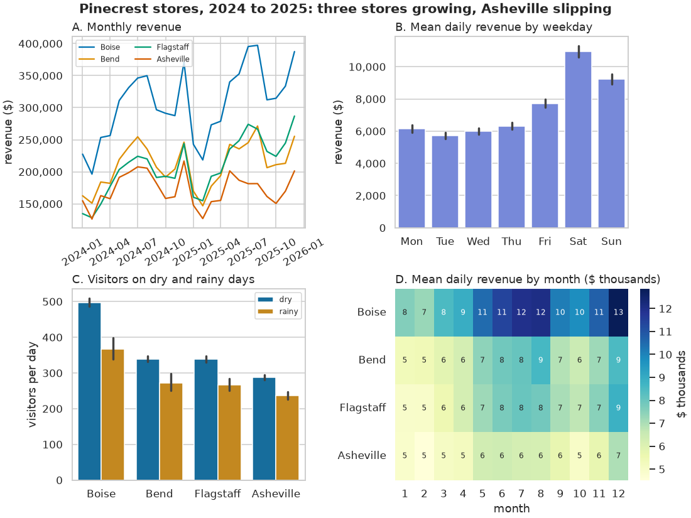
✅ Project Completion Checklist
- Each panel is a function that takes
axand uses an axes-level seaborn call - The trend panel is drawn from a table with one row per store and month, and shows no shaded band
- Weekdays and stores appear in a deliberate order (
order=,hue_order=) - Bootstrapped intervals are seeded, and your notes say what the bars represent
- The headline states a finding that your printed numbers support
store_brief.pngexists and is readable at the size you would paste into a document
🏋️ Hands-on Exercises
🏋️ Exercise 1: Compare Four Distributions
Draw the cumulative distribution of daily visitors for the four stores on one Axes. From the chart, estimate each store's median, then check your reading with pandas.
💡 Hint
sns.ecdfplot with hue="store". Read across from 0.5 on the y axis.
✅ Solution
fig, ax = plt.subplots(figsize=(8, 4), layout="constrained")
sns.ecdfplot(data=sales, x="visitors", hue="store", hue_order=store_order, ax=ax)
ax.axhline(0.5, color="gray", linewidth=1, linestyle="--")
plt.show()
print(sales.groupby("store")["visitors"].median().loc[store_order])Output
store
Boise 444.0
Bend 310.0
Flagstaff 304.0
Asheville 252.0
Name: visitors, dtype: float64🏋️ Exercise 2: Who Finds the Prices High?
Using survey, plot mean sat_price by age_group with 95% confidence intervals, age groups in their natural order. Which group stands out? Print the means to confirm.
💡 Hint
sns.pointplot or sns.barplot with order=ages and seed=. The ages list is in Common Mistakes.
✅ Solution
fig, ax = plt.subplots(figsize=(8, 3.6), layout="constrained")
sns.pointplot(data=survey, x="age_group", y="sat_price", order=ages,
errorbar=("ci", 95), seed=42, capsize=0.15, ax=ax)
ax.set(xlabel="age group", ylabel="mean price satisfaction (1 to 5)", ylim=(2.5, 4))
plt.show()
print(survey.groupby("age_group")["sat_price"].agg(["count", "mean"]).round(2))Output
count mean
age_group
18-24 186 2.80
25-34 273 3.32
35-44 309 3.38
45-54 332 3.38
55-64 273 3.44
65+ 380 3.33Customers aged 18 to 24 rate prices about half a point lower than every other group, and their interval does not come close to the others. Note the ylim: a point plot does not have to start at zero, but say so when you zoom in.
🏋️ Exercise 3: Facet a Distribution
Use a figure-level function to draw the histogram of completed order_total on a log scale, one panel per channel, with each panel showing density. Give the panels plain titles ("online", "store").
💡 Hint
sns.displot(..., col="channel", log_scale=True, stat="density", common_norm=False), then g.set_titles("{col_name}").
✅ Solution
g = sns.displot(data=completed, x="order_total", col="channel", log_scale=True, bins=40,
stat="density", common_norm=False, height=3, aspect=1.5)
g.set_titles("{col_name}")
g.set_axis_labels("order total ($, log scale)", "density")
plt.show()
print(type(g).__name__, g.axes.shape)Output
FacetGrid (1, 2)🏋️ Exercise 4: Does Rain Change the Weekly Pattern?
With the daily table from the project, draw mean visitors by weekday, split by weather with hue, one panel per store. Then answer: is the rainy-day drop about the same on weekdays and weekends?
💡 Hint
sns.catplot(kind="point", ...) with col="store", col_wrap=2, order=days and hue_order=["dry", "rainy"].
✅ Solution
g = sns.catplot(data=daily, x="weekday", y="visitors", hue="weather", col="store", col_wrap=2,
order=days, hue_order=["dry", "rainy"], col_order=store_order,
kind="point", errorbar=("ci", 95), seed=42, height=2.5, aspect=1.6)
g.set_titles("{col_name}")
g.set_axis_labels("", "visitors per day")
plt.show()
daily["weekend"] = daily["weekday"].isin(["Sat", "Sun"])
check = daily.pivot_table(index="weekend", columns="weather", values="visitors", aggfunc="mean")
check["change_pct"] = (check["rainy"] / check["dry"] - 1) * 100
print(check.round(1))Output
weather dry rainy change_pct
weekend
False 316.2 234.2 -25.9
True 501.9 357.1 -28.9Rain removes a similar share of visitors on weekdays and at weekends (a little over a quarter when the four stores are pooled), which is a bigger number of people at the weekend. Intervals for rainy days are wider because there are fewer of them, especially in Bend.
🏋️ Exercise 5: A Rank Correlation Heatmap (Stretch)
Compute the Spearman correlation matrix of the six survey rating columns (sat_overall, sat_selection, sat_price, sat_staff, sat_website, recommend) and draw it as a heatmap that shows only the lower triangle. Which rating is most closely tied to recommend?
💡 Hint
.corr(method="spearman"). A boolean matrix from np.triu(np.ones_like(corr, dtype=bool)) passed as mask= hides the upper triangle and the diagonal.
✅ Solution
ratings = ["sat_overall", "sat_selection", "sat_price", "sat_staff", "sat_website", "recommend"]
rank_corr = survey[ratings].corr(method="spearman")
hide = np.triu(np.ones_like(rank_corr, dtype=bool))
fig, ax = plt.subplots(figsize=(6.5, 5), layout="constrained")
sns.heatmap(rank_corr, mask=hide, annot=True, fmt=".2f", cmap="vlag", vmin=-1, vmax=1,
center=0, square=True, ax=ax)
plt.show()
print(rank_corr["recommend"].drop("recommend").sort_values(ascending=False).round(2))Output
sat_overall 0.63
sat_staff 0.58
sat_selection 0.55
sat_price 0.53
sat_website 0.48
Name: recommend, dtype: float64Spearman is the right choice because ratings are ordinal. .corr() uses every pair of rows where both values are present, so the staff and website columns (often missing, and not at random) are based on different customers than the rest. That belongs in the caption.
🎯 Quick Quiz
🎯 Check Your Understanding
Question 1: You have fig, axes = plt.subplots(1, 2) and want a seaborn chart in the right-hand panel. Which call works?
Question 2: sns.lineplot(data=sales, x="month", y="revenue") draws a line with a shaded band. With default settings, what is the band?
Question 3: What does this print?
quiz_g = sns.displot(data=sales, x="revenue", col="store", row="year", height=1.5)
print(type(quiz_g).__name__, quiz_g.axes.shape)Question 4: Two analysts chart mean daily revenue per store from the same 700 days each. One uses errorbar="sd", the other errorbar=("ci", 95). How do the bars compare?
Question 5: A bar chart of survey answers by age group comes out with the groups in the order 45-54, 18-24, 65+, 25-34. What is the right fix?
❓ Common Questions at This Stage
Should I now use seaborn for everything and forget Matplotlib?
No. Use seaborn when the chart involves grouping or statistics that seaborn would otherwise make you code by hand: distributions, comparisons across categories, small multiples. Use Matplotlib when you have already computed exactly what to draw, or when the layout is unusual. Most real figures use both, as the project did.
My chart does not look like the one on this page. Why?
Almost always the theme. The lesson calls sns.set_theme(style="whitegrid", palette="colorblind") once, and it stays in force for the whole notebook. If you restarted the kernel and ran only a later cell, the theme is not set. The other cause is bootstrapping: confidence intervals differ slightly between runs unless you pass seed=.
How do I change the size of a relplot, displot or catplot? figsize does nothing.
Figure-level functions size each panel with height= (inches) and aspect= (width divided by height). The figure is as large as the panels need. Two columns of panels with height=3, aspect=1.5 give a figure about 9 inches wide, plus room for the legend.
My data is wide: one column per store. Can seaborn plot it?
Some functions accept wide tables directly (sns.lineplot(data=wide_table) draws one line per column, and heatmap requires wide data). For anything involving hue, col or statistics, reshape to long form with wide_table.melt(...) first. One reshape, and every seaborn function becomes available.
I have seen code that starts with import seaborn.objects as so. What is that?
It is a second, newer interface to seaborn in which a chart is built by chaining steps onto a so.Plot object. It is still marked experimental by the seaborn project, and nearly all existing code and answers use the function interface taught here. Learn this one first.
🌟 Going Further: Bonus Challenge
Ordinal ratings are better shown as shares than as means. Build a table of the percentage of each sat_staff rating (1 to 5) for each of the four stores, then draw it as an annotated heatmap with stores as rows and ratings as columns. Does Asheville's lower mean come from many very unhappy customers, or from a general shift toward 3 and 4? Start with pd.crosstab(..., normalize="index").
📓 Learning Journal
Take five minutes to write in your learning journal (the journal.md file you started in Lesson 0.1, or a paper notebook). Jot down:
- Key concepts you learned today
- Techniques that clicked (and the ones that have not, yet)
- Questions or confusion to come back to
- Ideas to try on your own
- Progress and feelings: how did this lesson go for you?
✍️ This lesson's prompt: Think of a chart with error bars that you have seen in a news article, a report or a presentation. Did it say what the bars were? Write two sentences on how your reading of that chart changes depending on whether they showed spread or uncertainty.
📝 Lesson Summary
🎓 Key Takeaways
- Seaborn sits on top of Matplotlib. You describe a chart by naming columns (
data,x,y,hue), and it does the grouping, statistics and legend. sns.set_theme()changes the look of every later figure, Matplotlib's included.- Axes-level functions take
ax=and return an Axes. Figure-level functions (relplot,displot,catplot) make their own figure, facet withcolandrow, and return a FacetGrid. lineplot,barplotandpointplotaggregate. The default bar or band is a bootstrapped 95% confidence interval for the mean;errorbar=changes it, and you must tell the reader which one you drew.heatmapshows a pivot table or correlation matrix;pairplotis a private first look at a few variables.- Finish with Matplotlib, and use Matplotlib alone when the data is already aggregated or the layout is custom.
🏆 What You've Accomplished
- Drew scatter, line, histogram, ECDF, box, bar and point charts with one call each
- Showed the same means with four kinds of error bar and explained the difference
- Built small multiples without a loop
- Composed a four-panel store brief from reusable panel functions and saved it
🔭 Looking Ahead
Everything so far has been a picture: fixed once saved. In Lesson 7.2: Interactive Charts with Plotly the chart becomes something a reader can question. They hover for exact values, zoom into a week, and switch stores on and off, all in a single HTML file you can email.
📋 Before the Next Lesson
- Keep
store_brief.pngand your three sentences: the capstone asks for exactly this kind of figure - Re-draw one chart from Module 3 or 4 with seaborn and compare the amount of code
- Check that Plotly is installed:
python -c "import plotly; print(plotly.__version__)"should print a version starting with 7
🌱 Encouragement for the Journey
You now have a second way to draw, and it took one lesson because the first way was solid. If axes-level and figure-level still blur together, that is normal: print type() of whatever came back and let the answer guide you. The habit that matters most from today is not a function name. It is asking of every error bar, yours or someone else's, "what does this actually show?"